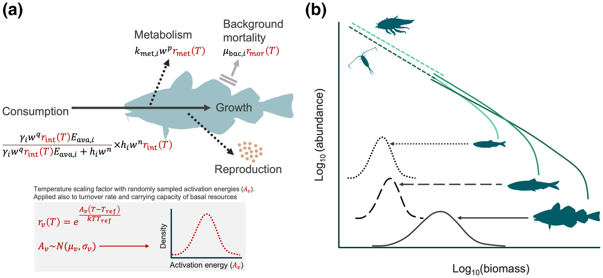
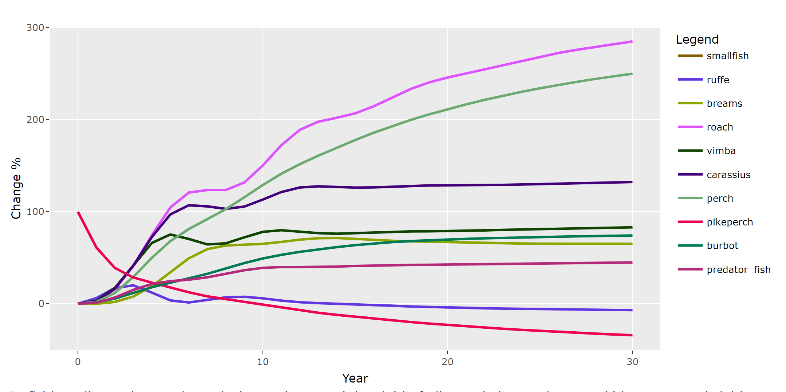
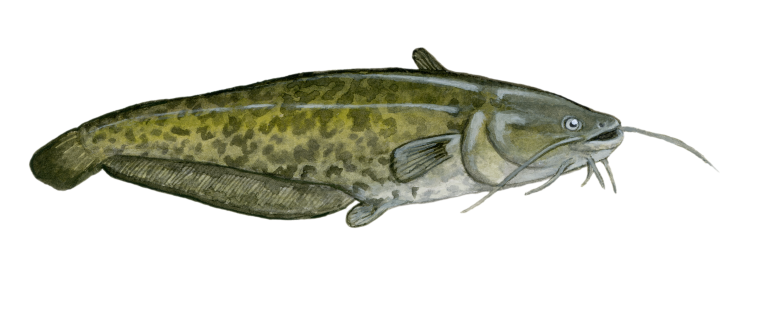

CHANGE TO LT: Size based models for Baltic Sea and Curonian lagoon
Įvadas
Individų dydžiu pagrįsti bendrijų ir ekosistemų modeliai yra galingas ir populiarus įrankis tiriant tarprūšinę sąveiką, ekosistemų dinamiką, klimato kaitą, žvejybos poveikį ir daugelį kitų procesų. Norėdami plačiau susipažinti su tokio tipo modeliais, skaitykite Ken H Andersen knygą “Fish Ecology, Evolution, and Exploitation” (2019) arba apsilankykite plačiai naudojamo dydžiu pagrįstu modeliavimo R paketo mizer pagrindiniame puslapyje. Trumpą apžvalgą taip pat galite rasti šioje publikacijoje,
Šio projekto metu mes pritaikėme mizer pakrančių ir gėlo vandens ekosistemoms, įdiegdami dydžiu pagrįstą foninių resursų struktūrą. Ši modifikacija leidžia vartotojams geriau ir tiksliau modeliuoti atskirus planktoną, bentosą, makrodumblius ir kitus maisto išteklius, kas tai yra svarbus sekliųjų vandenų ekosistemų aspektas. Modifikuotas mizer buvo naudojamas Baltijos jūros ekosistemos modeliui sukurti ir ištirti, kaip klimato kaitos sąlygoti žuvų fiziologijos ir maisto išteklių gausumo pokyčiai gali paveikti biomasę ir menkių, strimėlių bei bretlingių produkciją.
Taip pat sukūrėme pirmąją Kuršių marių ekosistemos modelio versiją, kuri apima atskirus bentoso ir planktono išteklius bei dešimt pagrindinių žuvų rūšių. Modelis buvo sukurtas mizer kurso metu, kur kurso dalyviai prisidėjo prie modelio parametrizacijos.

Modelio kodas
Norėdami naudoti dydžiu pagrįstus modelius su mizer, jums reikia R ir Rstudio, taip pat turite įdiegti mizer paketą. Daugiau informacijos apie tai, kaip tai padaryti, rasite šioje mizer kurso svetainėje. Šioje svetainėje rasite išsamius paaiškinimus, kaip rasti rūšies parametrus, paruošti ir kalibruoti modelį. Taip pat galite pamatyti skirtingus Kuršių marių žuvų rūšių biomasės žvejybos scenarijus, kai kurie rezultatai rodomi toliau pateiktuose paveikslėliuose.
Jei norite naudoti mizer su keliais maisto ištekliais, įdiekite mizerMR priedą iš Github. Siekdami palengvinti modelio kalibravimą, taip pat pritaikėme ShinyR programą, pasiekiamą čia. Jei norite peržiūrėti ShinyR programos ekrano kopijas nepaleidžiant modelio, eikite čia.
Visas Baltijos jūros modelio modelio kodas ir visi sugeneruoti duomenys yra prieinami GitHub ir Zenodo.

Modelio pritaikymas
Straipsnis, kuriame aprašomas Baltijos jūros modelis, publikuotas Global Change Biology žurnale ir yra pasiekiamas čia.
Vis dar dirbame prie Kuršių marių modelio. Galutinis modelio kūrimas ir pritaikymas įvairiems klimato kaitos ir žuvininkystės klausimams yra doktorantūros projekto, kurį 2022 m. gruodžio mėn. Gamtos tyrimų centre pradėjo Elyza Pilipaitytė, tema. Jei norite sužinoti daugiau ar bendradarbiauti, susisiekite lydekaipaliepus@gamtc.lt.
